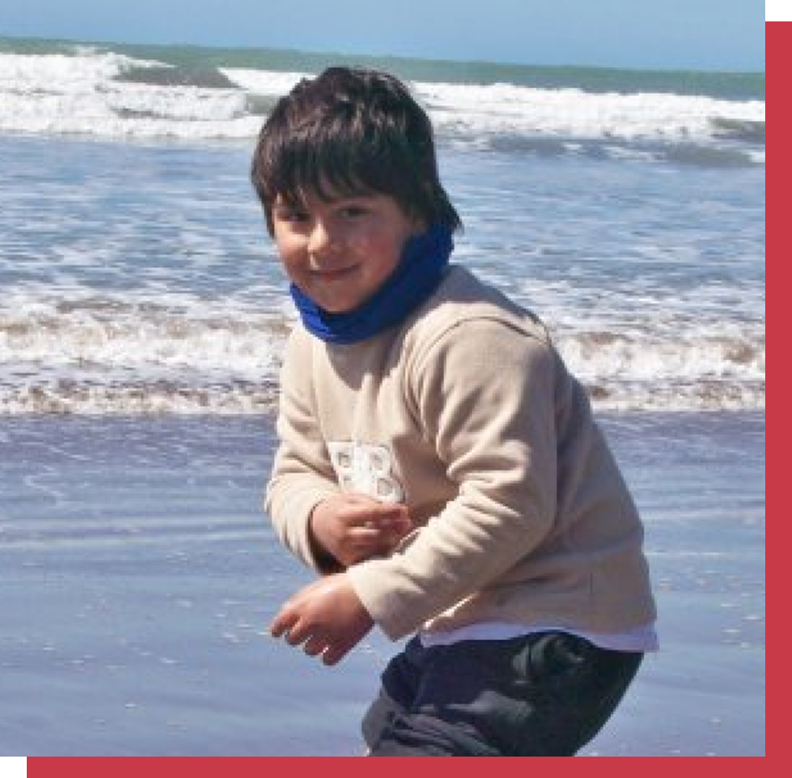
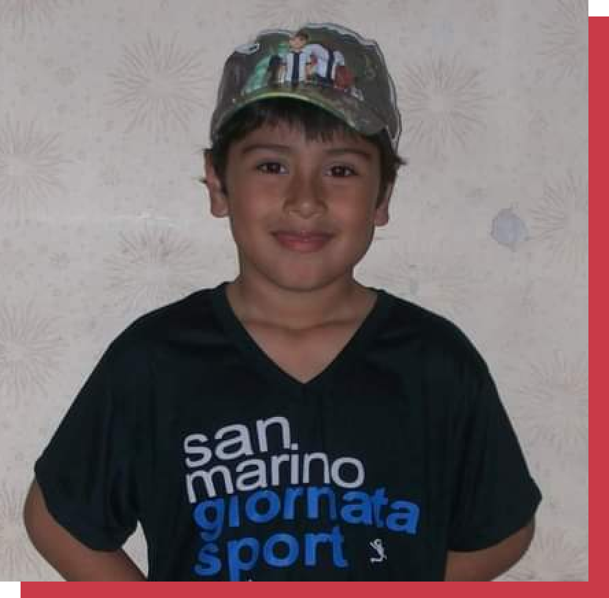
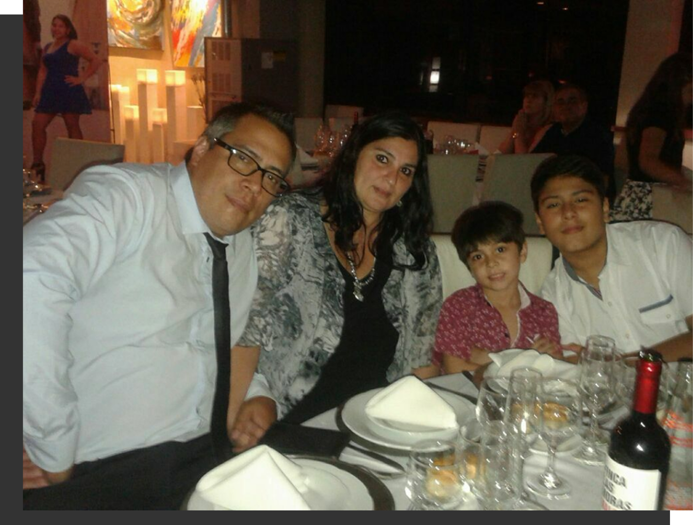
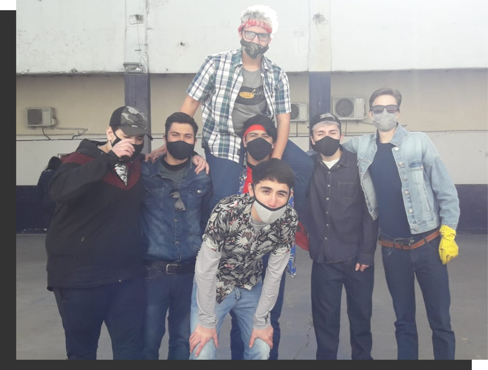
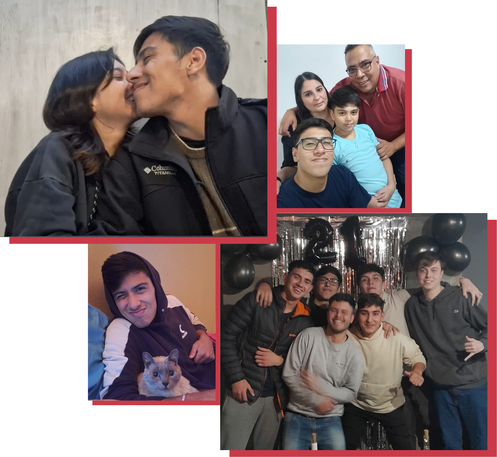
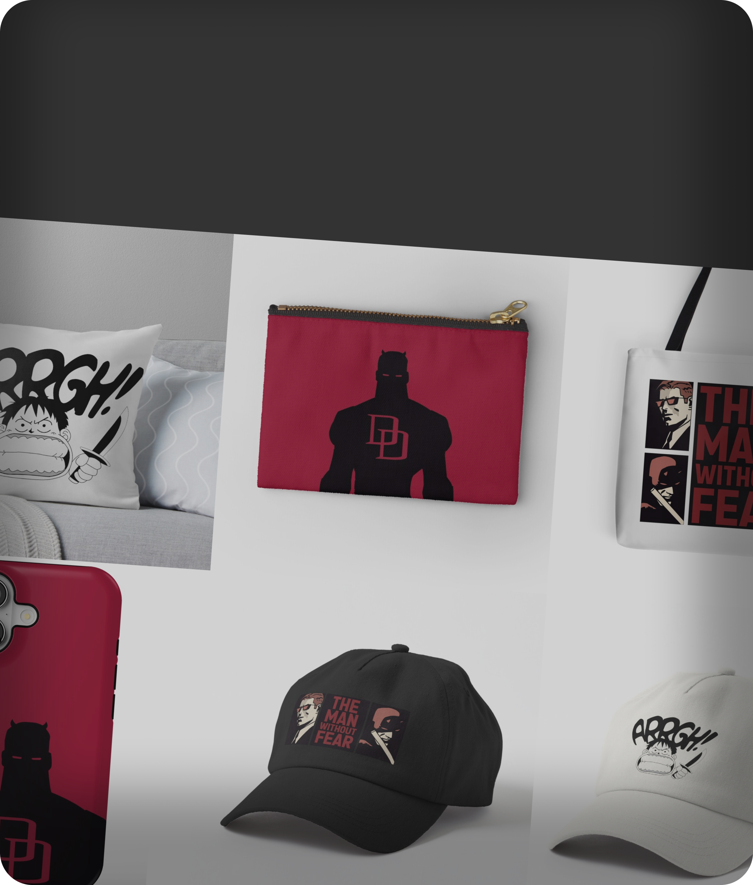
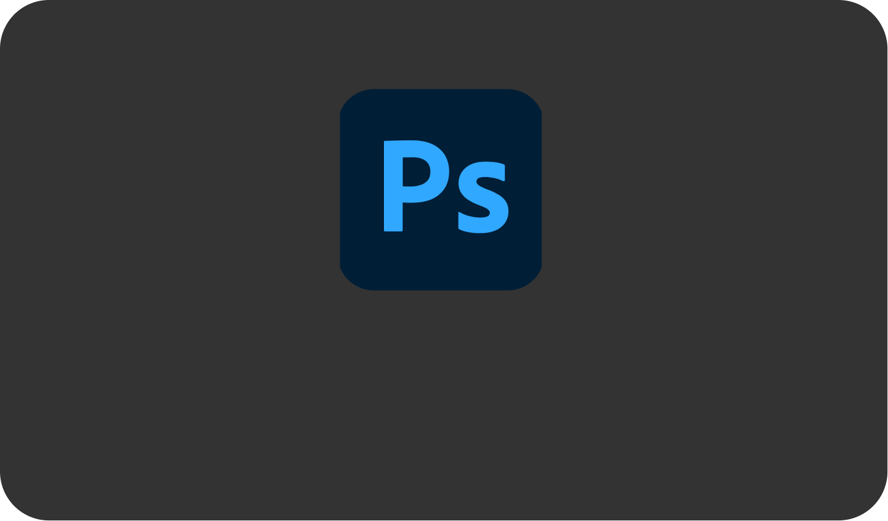
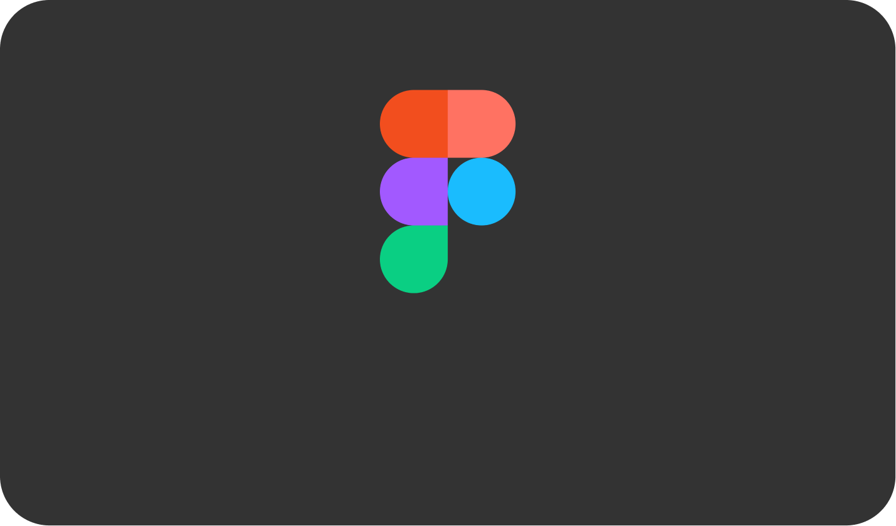
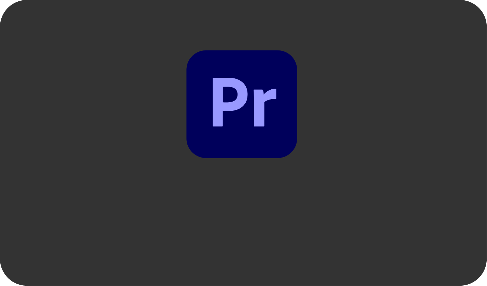
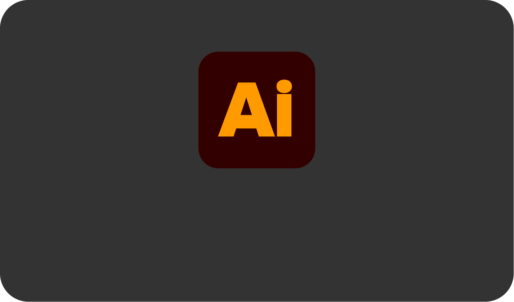

¿Quién Soy?
Lautaro Franco
¿Cómo llegué acá?

Infancia
Nací el 6 de enero de 2004 en La Plata. Desde muy chico me interesó todo lo relacionado con el arte: me gustaba dibujar, pintar, cortar revistas para hacer collages, entre otras tantas cosas más. Cuando iba a la escuela, mi materia preferida era plástica, ya que para mí era el único momento donde la escuela no se sentía como una obligación, sino como un lugar donde podía explotar mi creatividad.


Adolescencia
Ya en el secundario, seguía teniendo interés en todo lo relacionado al arte, pero empecé a descubrir
las herramientas digitales para editar imágenes. Conocí una aplicación de celular llamada
Photoshop
Touch, la cual usé incluso para hacer trabajos prácticos de la escuela.
Tuve un profesor llamado Juan Gallerano (quien también fue profesor de mi hermano y
actualmente lo
es en la materia Lenguaje Visual 1 en la FDA), quien me permitió
realizar muchos trabajos prácticos
con el celular. Ahí me di cuenta de que me gustaba mucho crear contenidos digitales y que
ese campo
me interesaba.
Al llegar a cuarto año, tuve una materia llamada “NTICx”. Gracias a la profesora
Loy Pescio,
descubrí la carrera de Diseño Multimedia. Aunque yo tenía pensado estudiar Cine
porque me gustaba
grabar y editar videos, la profesora me recomendó Multimedia, ya que mis intereses
y lo que hacía
eran más acordes a esa carrera.



Presente
Empecé la carrera con dos amigos de la escuela: uno de ellos dejó en primer año y el otro actualmente
está realizando la tesis. Más adelante, otro amigo también se anotaría en la carrera.
Actualmente estoy cursando Taller IV, Teoría de la Práctica Artística, Gestión de Proyectos y este
seminario. Si todo sale bien, el próximo año tendré solamente otro seminario y la tesis. A lo largo
de estos años conocí a mucha gente, entre ellos a Agostina, quien luego de dos años cursando, se
convertiría en mi novia y con quien ya llevamos más de un año juntos.
¿Qué me gusta crear?
Publicaciones para redes

Posters

UI/UX

Merchandising

¿Qué softwares uso?
Photoshop

Figma

Premiere Pro

Filmora
Audition
VS Code
Illustrator

Resolume Arena
francol0601@hotmail.com
@lautarofranc0
TP#1 — Repaso y diagnóstico del uso de las tecnologías web